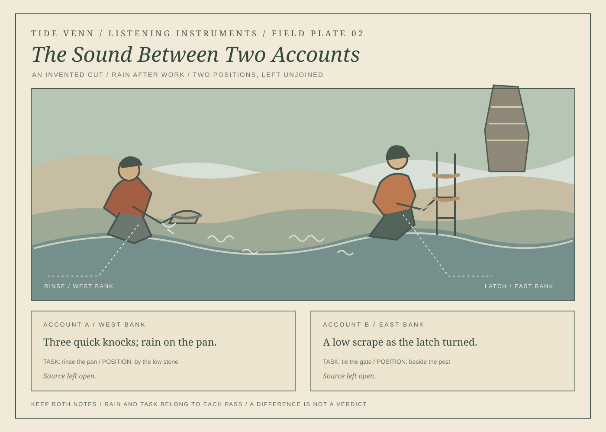

The Sound Between Two Accounts
Two people finish ordinary tasks beside an invented cut. Rain, position, and a sound remain in separate accounts.

Read the two accounts
On the west bank, a listener rinses a pan and records three quick knocks with rain on the pan. On the east bank, another listener ties a gate and records a low scrape as the latch turned. Each account keeps its task and position. Neither identifies the sound's source.
This is an artwork and listening exercise set in an invented place, not a survey record.
Download the plate as SVG · See A Ticket for Returning · All works